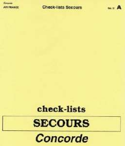
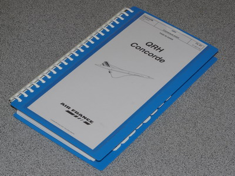

|
En aéronautique, la sécurité est une préoccupation de tous les instants. L'oubli d'une vérification ou d'une action peut avoir des conséquences
catastrophiques En cas d'anomalie en vol, les procédures de pannes sont regroupées en procédures
à connaitre par coeur (à restituer sans lecture) et en procédures à lire sur les check lists. Le pilote qui
n'est pas en fonction (PNF) Les documentations TU (3 gros classeurs conservés à l'arrière du cockpit) contiennent toutes
les procédures. Chez Air France, il est fait en sorte qu'il y ait une standardisation des
procédures et que les livrets de procédures soient sous la même forme, quel que soit le type d'avion. Par
exemple, la check list du Boeing 707 est intitulée ''check lists Urgence/secours''. |
Consultez la check-lists normales 2003 Air France

Consultez la check-lists secours

Consultez la check-lists urgence

En 2003, ces 2 dernières ont été remplacées par un petit classeur à spirale,
le livret QRH Concorde (Quick Reference Handbook) qui regroupe les procédures d'urgence,
les check-lists secours, ainsi que la liste des procédures anormales complémentaires :
Consultez la check-lists QRH

La famille au grand complet :
(collection DP)
Je ne possède pas de check-lists Secours et Urgence dans ma collection.
Je suis ouvert à toute proposition d'une personne qui chercherait à en vendre une.
Me contacter
ici